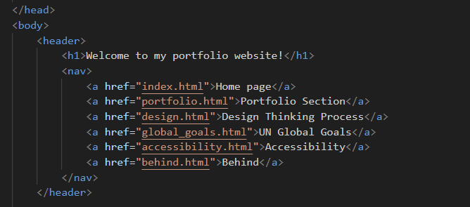
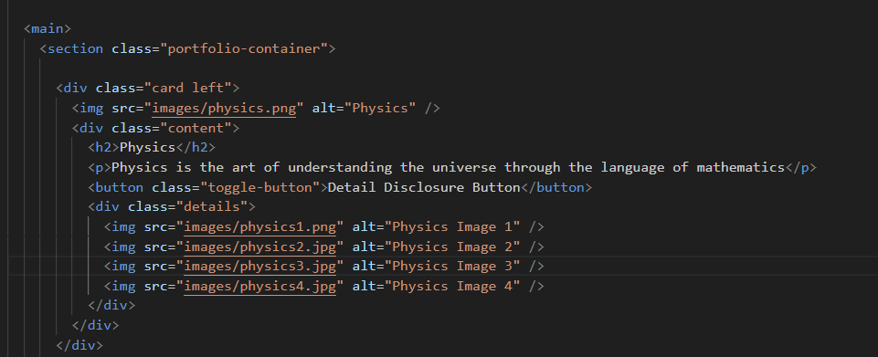
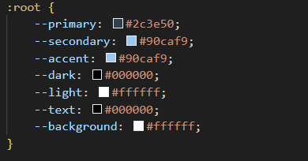
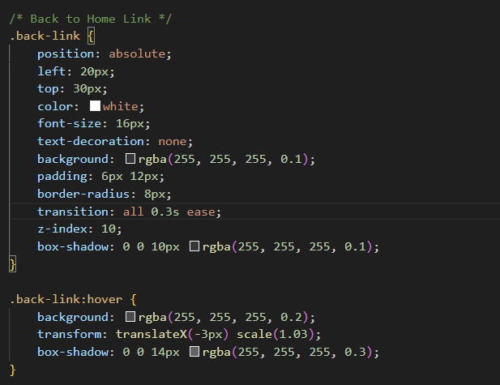
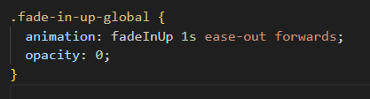
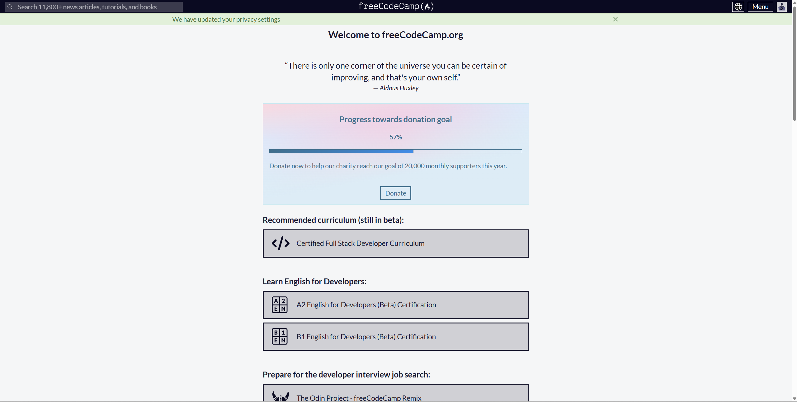
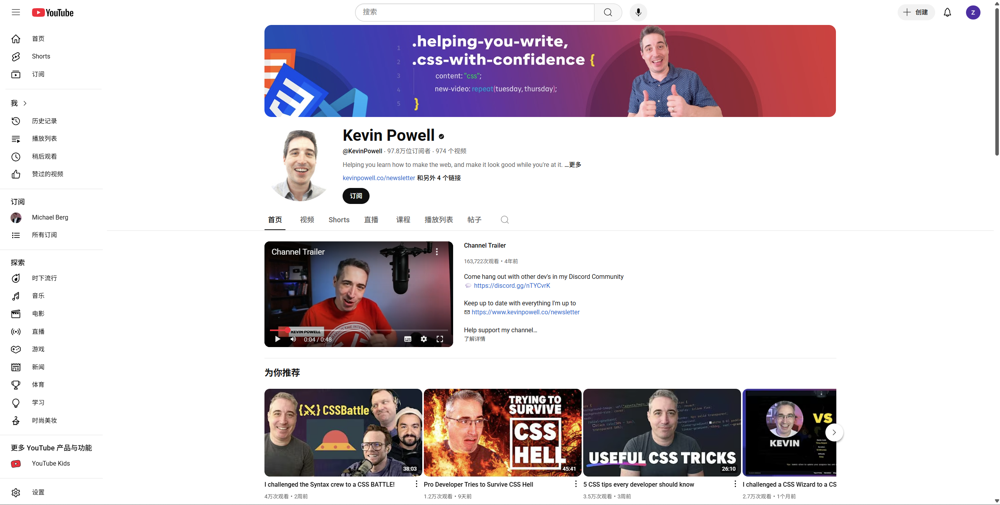
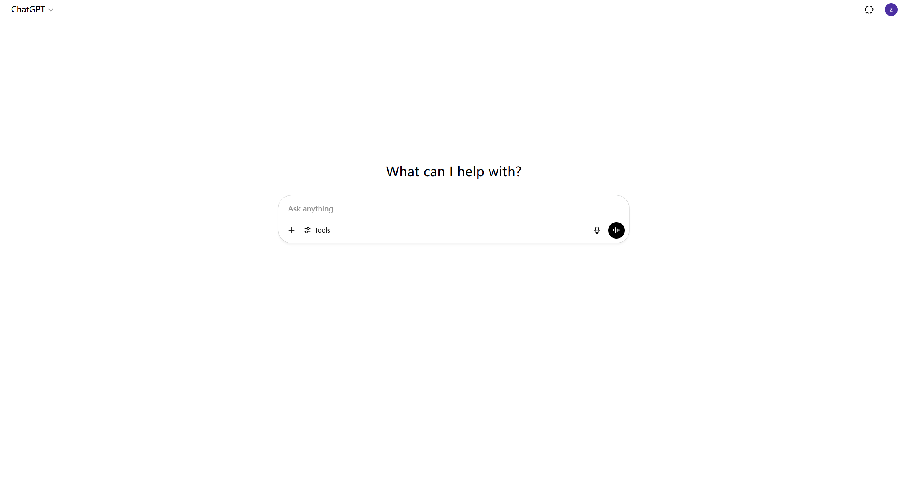

screenshots of codes.
basic structrue of the catalogue
showing pictures
background color
explaination of challenge parts
At the beginning when I was getting started, I had no idea about the "size" things. So, regarding the "position" of the buttons and the "size" of the buttons, I made many adjustments.
At the beginning, when creating the animation where "pf" and "global" gradually displayed similar to page information, the above information would often suddenly flash out. After many searches, I finally discovered that I needed to set the initial transparency to 0.
developer tools usage
  what i learned from process
To be honest, when I first decided to build a website, I had no idea what I was doing. Terms like HTML, CSS, and JavaScript sounded super intimidating—like some secret code only tech geniuses could understand. I was a complete beginner and honestly wasn’t sure I’d be able to figure it out. But I decided to give it a shot anyway. I started with super basic YouTube tutorials and the web corese work, followed some step-by-step guides online, and began messing around with code on sites like codepractise area. My first webpage was ridiculously simple—just some text on a colored background. Still, seeing something I made show up in a browser was really exciting. Of course, there were tons of frustrating moments. My layout would break, random error messages popped up, and half the time I didn’t even know what I did wrong. I wanted to quit more than once. But every time I solved a small issue, it felt like a little victory. Slowly, I learned how to make menus, add images, and even make my site work on phones. Each step built up my confidence. Eventually, I launched my first personal portfolio website. It wasn’t perfect, but it was mine—and it represented hours of hard work, trial and error, and learning. Looking back, the most important thing I learned wasn’t just coding. It was patience, problem-solving, and not being afraid to start something new. The journey turned fear into curiosity. I may not be a pro yet, but I’m definitely on my way—and now, I’m excited to keep going.